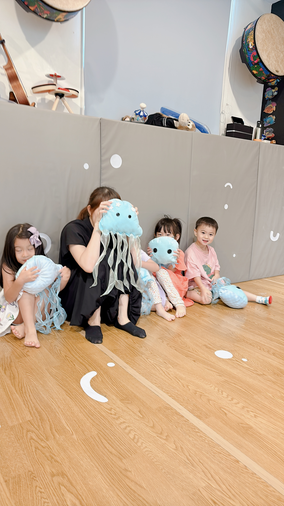
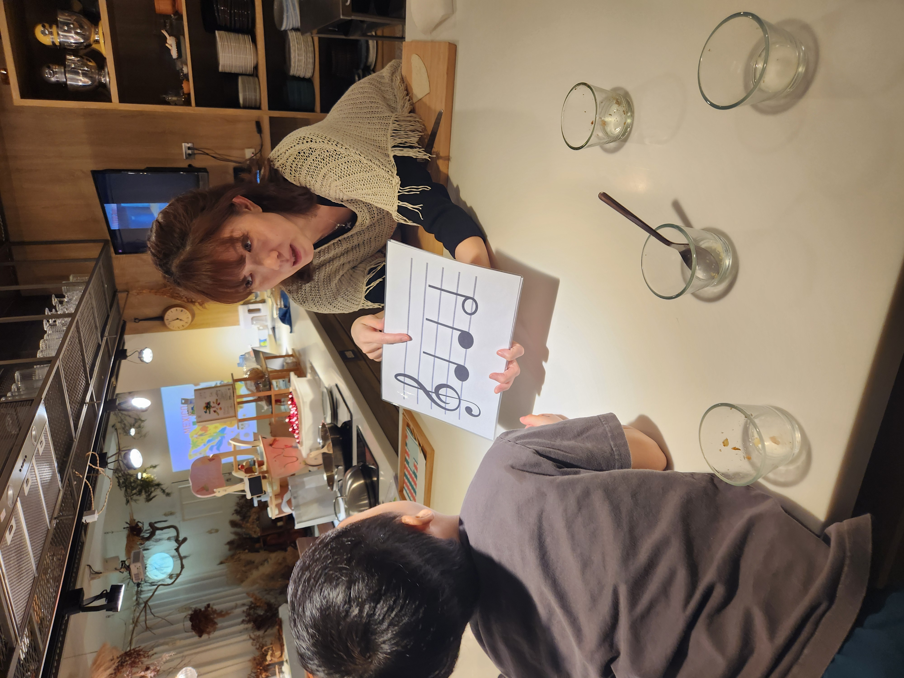

從親子共學到獨立探索，讓音樂成為陪伴孩子一生的第二語言。
歡迎你成為孩子人生第一個老師。音樂 × 陪伴 = 孩子最佳的學習養分。
在滿滿音樂能量中陪孩子成長茁壯，用豐富的音樂 ＆ 體驗，灌溉 0～5 歲的成長黃金期。
在遊戲中發現創造力，用音樂探索世界的節奏。因為音樂，不只是才藝，而是陪伴孩子一生的第二語言。
從遊戲走向彈奏，培養專注與自信的音樂心。從遊戲中探索，在節奏裡成長。
越早開始，越能展現孩子的音樂潛能。現在開始，也還不遲。
好森有兩個音樂品牌，一起陪孩子從 0 歲玩到 9 歲。
寶寶大腦的爆炸發展期，在音樂中儲存滿滿的能量，成為孩子人生第一個老師。
在充滿音樂的環境中建立音樂基本能力，用唱歌、律動、樂器陪孩子成長茁壯。

以音樂為主軸，動手做主題探索與實驗，在遊戲中發現創造力。

從聆聽遊戲轉向理解彈奏，培養專注力與建立練習基礎，每堂安排一對一引導。
＊3 歲以上可有兩堂 MT 課程轉換大童班體驗名額
夏季號 5/27－8/1，共 10 週。
＊One+ 地址：台南市東區長榮路一段89號 B1（府都 All in 1 大樓）
＊新增時段將視招生結果後確認是否開班
預約體驗課、詢問課程，或者只是想多了解一點——傳 LINE 給我們就好。
加 LINE 詢問 ／ 預約體驗週一至週六 09:00–21:00 皆可傳訊
📍 台南市南區鹽埕路291巷94弄10號 3F（近誠品碳佐麻里園區，1F 為漫漫弄）